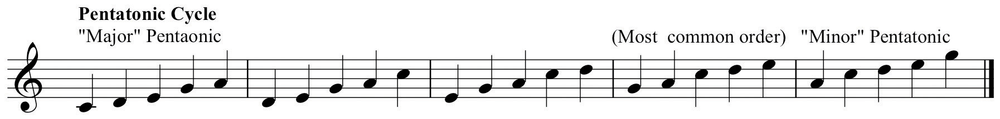
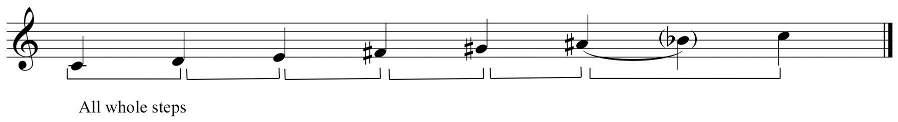
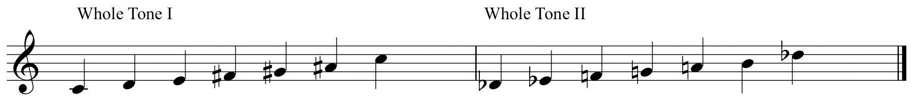
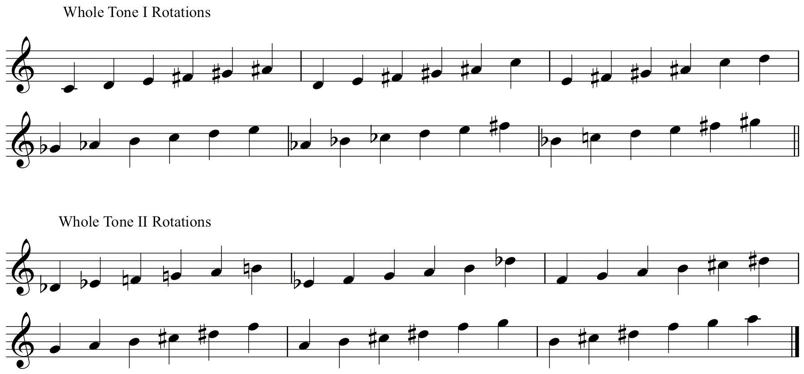
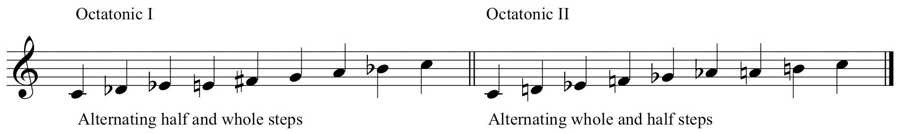
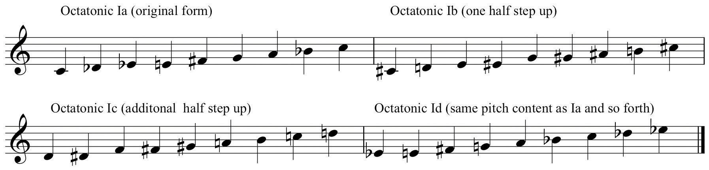
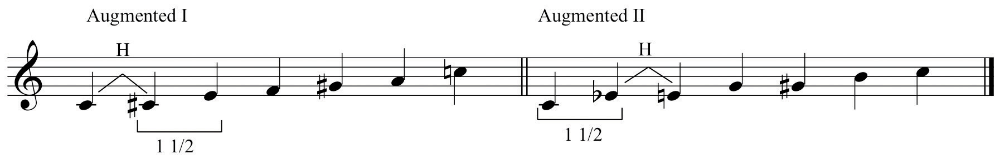
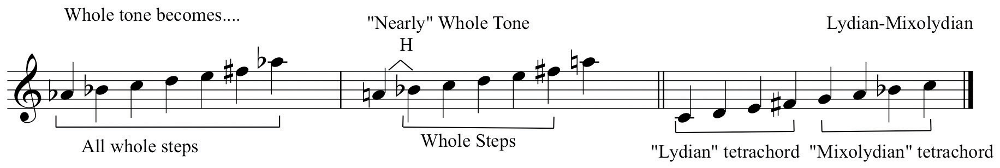

The fin de siécle period, the crossover period between the 19th- and 20th Centuries, witnessed monumental changes as to how music was composed. By this point in the evolution of Western music, Tonal music had not exhausted itself, but had developed as fully as it could in terms of compositional resources.
Composers began to explore alternate scalar resources to Major and Minor. Modes were employed as was the Pentatonic scaleProperly, a scale that divides the octave into five equal portions. In equal temperament, this is most closely approximated aurally by playing the black keys at the piano.. The absence of a Leading Tone in the Pentatonic scale, as well as its folk music associations, made it an attractive, naturalistic alternative to Major and Minor scales.
In Jazz pedagogy, two distinct forms of the Pentatonic scale are recognized, called Major Pentatonic and Minor Pentatonic. They are so-called due to their inherently Major or Minor sounding qualities.
Figure 3.23 Pentatonic Scale Rotation
Composers in this historically transitional period and throughout the 20th Century seemed fascinated by aspects of symmetry in musical constructs.The symmetrical nature of the Pentatonic scale is not overtly obvious. The symmetry is there, but its explanation must be held in abeyance contingent upon other acquired information. In scale construction, this took the form of division of the octave into symmetrical portions. This is apparent in the types of scale patterns that came into common use in the late 19th Century and continued throughout the 20th Century.
The Whole Tone ScaleA hexatonic scale comprised of only whole steps that divides the octave symmetrically into six equal portions of two half steps each., properly considered to be a Hexatonic (six-tone) scale, displays numerous symmetrical traits.There are numerous “axes of symmetry” in whole tone scales. Only those pertinent to this discussion are included here. It is comprised of all whole steps, dividing the octave symmetrically into six portions of two half steps each.
Figure 3.24 The Whole Tone Scale
Since this symmetrical division accounts for six of the possible twelve pitch-classes from the chromatic collection, the other six pitch-classes of the chromatic collection form one other whole tone scale.
Figure 3.25 Whole Tone I (WT I) and Whole Tone II (WT II)
Each whole tone scale replicates itself when re-ordered in a revolving manner. Pitch-classes remain identical, the “spacing” remains identical, although enharmonic spellings are freely used.
Figure 3.26 Revolving Whole Tone Scales
Because of these properties there are only two whole tone scales aurally. All other versions are re-orderings of either WT I or WT II, but will assume individual identities according to their use is specific contexts.
Another commonly used symmetrical scale is called the Octatonic ScaleAn eight-tone scale. The most common form is the symmetrical division of the octave into eight portions of either alternating half steps and whole steps, or alternating whole steps and half steps.Theoretically, any scale with eight constituent members is an octatonic scale. The versions described here are those most commonly used. In Jazz pedagogy, these versions are called “diminished scales” or “symmetrical diminished scales” because of the structures formed by alternate scale degrees. The two related forms of the Octatonic Scale divide the octave into eight portions consisting of either alternating half steps and whole steps, or alternating whole and half steps.
Figure 3.27 Octatonic I (Oct I) and Octatonic II (Oct II)
Oct I and Oct II have only three forms each. Figure 3.28 "Octatonic Rotations" shows Oct I with additional re-orderings on successively higher scale degrees. Observe that, after the original form and two additional transpositions have been listed, the fourth ordering is equivalent to the first, the fifth is equivalent to the second, and so forth. The same holds true for Oct II.
Figure 3.28 Octatonic Rotations
Another commonly used hexatonic scale pattern is sometimes called the “Augmented” scaleA hexatonic scale that symmetrically divides the octave by alternating half step and step-and-a-half, or the reverse..This hexachord, along with the Whole Tone, Octatonic, and Chromatic scales are labeled “Modes of Limited Transposition” in 20th-century composer Olivier Messiaen’s Techniques de mon langage musical. This label refers to the chords built upon alternate scale degrees. This is also a symmetrical construct, evenly dividing the octave by the pattern, “half step and a step and a half.” It’s related counterpart divides the octave by the reverse pattern, “step and a half and halfstep.”
Figure 3.29 “Augmented” Scale
Two other scales having great currency in 20th Century music are identical in pitch content and identical in their potential origin, but vastly different in context and usage. Figure 3.30 "“Nearly” Whole Tone and Lydian-Mixolydian" compares the Whole Tone scale to the “Nearly” Whole ToneA six-tone scale that is an altered whole tone scale. One pitch is altered to create a single half step in the collection. In this chapter it has been listed half step first. In other sources, there are other orderings. Hexachord and the Lydian-DominantA heptatonic scale wherein the first tetrachord resembles Lydian mode (raised 4) and the second tetrachord resembles Mixolydian mode (lowered 7). scale.Lydian-Dominant is only one label for this scale and is used here as a convenience only. Other names are Lydian-Dominant (common to Jazz pedagogy) or (the proper name) the Overtone Scale. These additional names will not acquire meaning until the student has acquired additional information. Observe that, despite differing orderings, the pitch-class content is identical for the “Nearly” Whole Tone and Lydian-Dominant scales.
Figure 3.30 “Nearly” Whole Tone and Lydian-Mixolydian
The Nearly Whole Tone hexachord is just that: all whole steps except for an initial half step. The Lydian-Mixolydian scale is so-named because the first tetrachord resembles the first tetrachord of the Lydian mode, and the second tetrachord resembles the second tetrachord of the Mixolydian mode.
Both scales have their potential postulated origin in the naturally occurring acoustical phenomenon called the Overtone (or Harmonic) Series, discussed in Chapter 6 "Chords".The Nearly Whole Tone hexachord is the source set that forms the basis of Russian composer Alexander Scriabin’s Mystic Chord, an important component of his personalized compositional syntax.
These are but a few of the many scales that have been recognized and used in contemporaneous theory and composition. While the primary focus of the student should be upon Major and Minor scales at this juncture, at least a passing familiarity with other scalar constructs is desirable.
One cannot begin to understand and perform early music without an understanding of modes. Much music since 1900 has been composed using modes or, at least, modal “flavors.” One cannot improvise credibly in the Jazz style without understanding and employing modes.
These same remarks may be made concerning the other scales discussed. One cannot begin to understand and perform modern music without an understanding of these various scale patterns. In time, with the proper investment of effort, these scales (and others) will open new worlds in a deepening musical experience.
The student should understand:
In your Scale Thesaurus:
In your Scale Thesaurus: